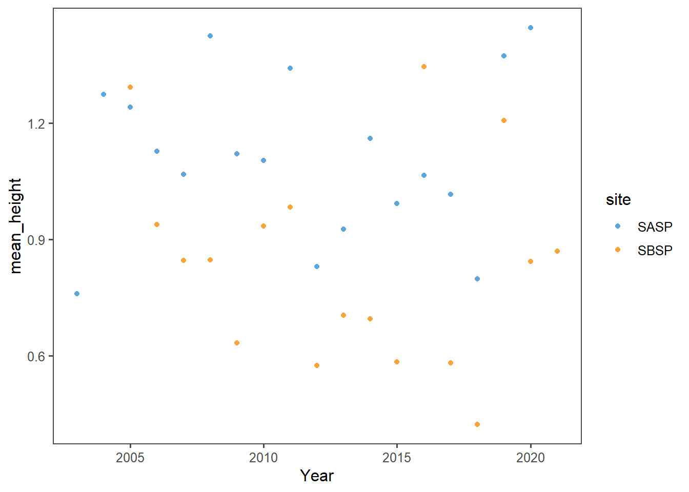

Chapter 8 Assignment 2
8.1 Question 1
8.1.1 What is the correlation between NDVI and NDMI? - here I want you to convert the full_long dataset in to a wide dataset using the function “spread” and then make a plot that shows the correlations a function of if the site was burned or not (x axis should be ndmi) You should exclude winter months and focus on summer months
full_wide <- spread(data=full_long,key='data',value='value') %>%
filter_if(is.numeric,all_vars(!is.na(.))) %>%
mutate(month = month(DateTime),
year = year(DateTime))
summer_only <- filter(full_wide,month %in% c(6,7,8,9))
ggplot(summer_only,aes(x=ndmi,y=ndvi,color=site)) +
geom_point(shape=1) +
theme_few() +
scale_color_few() +
theme(legend.position=c(0.8,0.8)) +
labs(x = "NDMI", y = "NDVI",
title ="Summertime NDMI and NDVI")
cor(summer_only$ndvi,summer_only$ndmi)## [1] 0.6919666The graph of NDVI to NDMI indicates a positive correlation in which an increase in NDMI corresponds to an increase in NDVI. This conclusion is supported by the calculated correlation coefficient of NDVI to NDMI, R= 0.6919666. This strong positive correlation suggests that a rising moisture index corresponds to a rising vegetation index.
8.2 Question 2
8.2.1 What is the correlation between average NDSI (normalized snow index) for January - April and average NDVI for June-August? In other words, does the previous year’s snow cover influence vegetation growth for the following summer?
annual_long_ndvi<-filter(full_long,data=="ndvi") %>%
mutate(month = month(DateTime),
year = year(DateTime)) %>%
filter(month %in% c(6,7,8)) %>%
group_by(site,year) %>%
summarize(mean_NDVI=mean(value))
annual_long_ndsi<-filter(full_long,data=="ndsi") %>%
mutate(month = month(DateTime),
year = year(DateTime)) %>%
filter(month %in% c(1,2,3,4)) %>%
group_by(site,year) %>%
summarize(mean_NDSI=mean(value))
ndsi_ndvi_annual <- inner_join(annual_long_ndsi,annual_long_ndvi,by=c("year","site"))
ggplot(ndsi_ndvi_annual,aes(x=mean_NDSI,y=mean_NDVI,col=site)) +
geom_point() +
theme_few() +
scale_color_few() +
theme(legend.position=c(0.85,0.3)) +
labs(x = "Mean Winter NDSI", y = "Mean Summer NDVI",
title ="Previous Year's Snow Index in Relation to Summer Vegetation Growth")
cor(ndsi_ndvi_annual$mean_NDSI,ndsi_ndvi_annual$mean_NDVI)## [1] 0.1813135Unlike the strong positive correlation we saw in the NDMI x NDVI graph and calculated value (R=0.6919666), there is no strong effect for NDSI x NDVI. The spread of the data in the graph does not indicate a correlated direction. This conclusion is supported by the calculated correlation coefficient, R= 0.1813135. The correlation between these two values is slightly positive, but very weak. From the graph and calculated correlation coefficient, we can conclude that there is no strong relationship between mean winter NDSI and mean summer NDVI. Instead, the relationship is weak, and an increase in mean winter NDSI may correspond to a slight-to-no increase in mean summer NDVI.
8.3 Question 3
8.3.1 How is the snow effect from question 2 different between pre- and post-burn and burned and unburned?
ndvi_prepost <- filter(full_long,data=="ndvi") %>%
mutate(year = year(DateTime),
month = month(DateTime),
treatment = cut(year,breaks=c(0,2003,2020),
labels=c('pre-burn','post-burn'))) %>%
filter(month %in% c(6,7,8)) %>%
group_by(year,site,treatment) %>%
summarize(mean_ndvi = mean(value))
ndsi_prepost <- filter(full_long,data=="ndsi") %>%
mutate(year = year(DateTime),
month = month(DateTime),
treatment = cut(year,breaks=c(0,2003,2020),
labels=c('pre-burn','post-burn'))) %>%
filter(month %in% c(1,2,3,4)) %>%
group_by(year,site,treatment) %>%
summarize(mean_ndsi = mean(value))
ndsi_ndvi<-inner_join(ndsi_prepost,ndvi_prepost,by=c("treatment","year","site"))
ggplot(ndsi_ndvi,aes(x=mean_ndsi,y=mean_ndvi,color=treatment)) +
geom_point(shape=1) +
geom_line() +
theme_few() +
scale_color_few() +
theme(legend.position=c(0.6,0.2)) +
labs(x = "Mean Winter NDSI", y = "Mean Summer NDVI",) +
facet_wrap(~site)
ggplot(ndsi_ndvi,aes(x=mean_ndsi,y=mean_ndvi,color=site)) +
geom_point(shape=1) +
geom_line() +
theme_few() +
scale_color_few() +
theme(legend.position=c(0.37,0.2)) +
labs(x = "Mean Winter NDSI", y = "Mean Summer NDVI",) +
facet_wrap(~treatment)
We saw a very weak but positive correlation between mean winter NDSI and mean summer NDVI in Q2. We can see similar results from graphs illustrating the relationship between the burned/unburned and pre/post-burn mean winter NDSI and mean summer NDVI.
The burned sites may have a slight positive correlation, but any correlation if present is very weak. The unburned sites appear to exhibit a slightly negative correlation, but still this correlation is very weak.
The pre-burned sites do not appear correlated. The visualized data progress horizontally without an indication of either a positive or negative relationship. Similarly, the post-burned site do not have a strong correlation, but may have a slight positive correlation because the data seem to be slightly progressing in a positive direction.
Ultimately, the correlations are weak between winter NDSI and summer NDVi regardless of site or treatment.None of the graphs showcase strong positive or negative correlations.
8.4 Question 4
8.4.1 What month is the greenest month on average?
month_ndvi <- spread(data=full_long,key='data',value='value') %>%
filter_if(is.numeric,all_vars(!is.na(.))) %>%
mutate(month = month(DateTime),
year = year(DateTime)) %>%
group_by(site,month) %>%
summarize(mean_NDVI=mean(ndvi))
ggplot(month_ndvi,aes(x=month,y=mean_NDVI,color=site)) +
geom_point() +
theme_few() +
scale_color_few() +
theme(legend.position=c(0.15,0.8)) +
labs(x = "Month", y = "Mean NDVI",
title ="Average NDVI by Month")A high NDVI value corresponds to more greenness because it is a vegetation index. September has the greatest mean NDVI value for the unburned site, closely followed by August. August had the greatest mean NDVI value for the burned site, closely followed by September.
However, the decrease from August to September in the burned site is greater than the increase in greenness from August to September in the burned site. Therefore, August is the greenest month on average.
8.5 Question 5
8.5.1 What month is the snowiest on average?
month_ndsi <- spread(data=full_long,key='data',value='value') %>%
filter_if(is.numeric,all_vars(!is.na(.))) %>%
mutate(month = month(DateTime),
year = year(DateTime)) %>%
group_by(site,month) %>%
summarize(mean_NDSI=mean(ndsi))
ggplot(month_ndsi,aes(x=month,y=mean_NDSI,color=site)) +
geom_point() +
theme_few() +
scale_color_few() +
theme(legend.position=c(0.6,0.8)) +
labs(x = "Month", y = "Mean NDSI",
title ="Average NDSI by Month")
For the unburned site, February is the snowiest month, closely followed by January. For the burned site, January is the snowiest month, closely followed by February.
The decrease in NDSI from January to February in the burned site is greater than the increase from January to February in the unburned site, so January is the snowiest month.
8.6 Bonus Question 1
8.6.1 Redo all problems with spread and gather using modern tidyverse syntax.
gatherwas used to stack as a tidy dataset in the first section titled, “Reading files”
# Stack as a tidy dataset **using tidyverse**.
full_long_bonus <- rbind(ndvi,ndmi,ndsi) %>%
pivot_longer(.,
cols=c("burned","unburned"),
names_to="site",
values_to = "value") %>%
filter(!is.na(value))gather was replaced by the pivot_longer() function
spreadwas used to make a full wide dataset in Question 1
full_wide_bonus <- pivot_wider(full_long,names_from = "data",values_from = "value") %>%
filter_if(is.numeric,all_vars(!is.na(.))) %>%
mutate(month = month(DateTime),
year = year(DateTime))
summer_only_bonus <- filter(full_wide,month %in% c(6,7,8,9))
ggplot(summer_only_bonus,aes(x=ndmi,y=ndvi,color=site)) +
geom_point() +
theme_few() +
scale_color_few() +
theme(legend.position=c(0.8,0.8)) +
labs(x = "NDMI", y = "NDVI",
title ="Relationship of NDMI to NDVI During Summer Months")cor(summer_only_bonus$ndvi,summer_only_bonus$ndmi)## [1] 0.6919666As we saw in Q1, there is a positive correlation between these tested values. When there is an increase in NDMI, there is a concomitant increase in NDVI.
spread was replaced by the pivot_wider() function